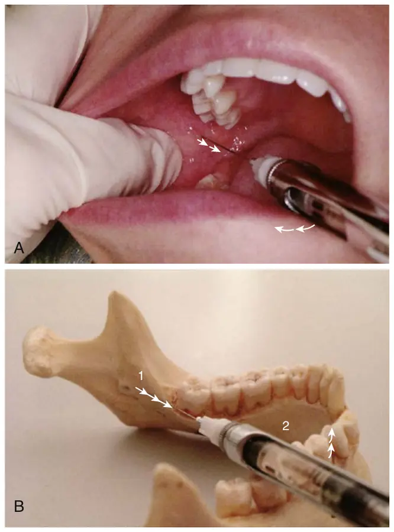
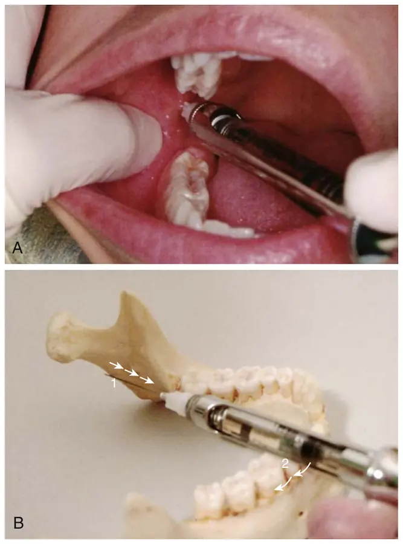

نسخه استخراجشده؛ ترجمه یا تأیید علمی انجام نشده است. وضعیت: captured
برای بلاک عصب آلوئولار تحتانی (IANB) سمت چپ، هنوز کمتر از نیمی از سوزن بلند در بافت بود که به استخوان خوردی و دارو را همانجا تزریق کردی. پانزده دقیقه بعد فقط اطراف محل تزریق بیحس است و لب و زبان هیچ تغییری نکردهاند. سوزن کجا بود؟

بیشتر شکستهای کامل IANB از جای نادرست سوزن میآید. عمق برخورد با استخوان بهترین سرنخ است: در بزرگسال سوزن معمولاً پس از ۲۰ تا ۲۵ میلیمتر، یعنی دوسوم تا سهچهارم سوزن بلند، به استخوان میرسد.
دارو زیر سوراخ مندیبولار نشسته و به عصب نمیرسد. خط ارتفاع تزریق در بیشتر بیماران ۶ تا ۱۰ میلیمتر بالای سطح اکلوزال مولرهاست. اصلاح: دوباره تزریق کن، این بار حدود ۵ تا ۱۰ میلیمتر بالاتر از محل قبلی.
اگر سوزن تا عمق معمول رفت و به استخوان نخورد، نوکش معمولاً خیلی خلفی (مدیال) است و ممکن است درون غدهی پاروتید، نزدیک عصب صورتی باشد. تزریق در این جا فلج گذرای عضلات حالت صورت در همان سمت میدهد؛ بیمار پلک پایین را نمیتواند ببندد و لب همان سمت میافتد.

تا سوزن به استخوان نخورده، در IANB دارو تزریق نکن.
تزریق یک کارپول ۱٫۸ میلیلیتری در دستکم ۶۰ ثانیه بیحسی پالپ موفقتری از تزریق همان حجم در ۱۵ ثانیه میدهد.
بیحسی بافت نرم زودتر از پالپ میآید. پس از IANB با لیدوکائین ۲٪ و اپینفرین، سهم بیماران با بیحسی پالپ در دقیقهی ۴ حدود ۲۵٪، در دقیقهی ۱۰ حدود ۶۰٪ و در دقیقهی ۱۵ حدود ۶۷٪ است. پیش از آنکه IANB را شکستخورده بدانی، ۱۰ تا ۱۵ دقیقه صبر کن.